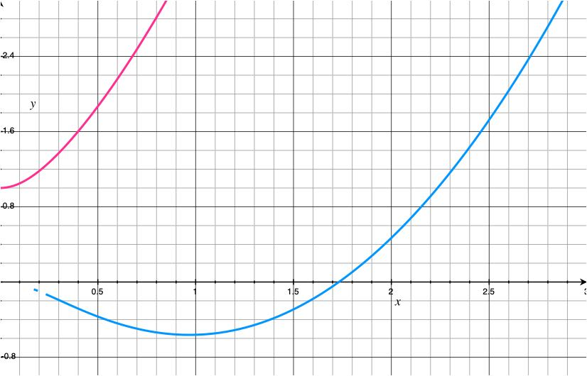
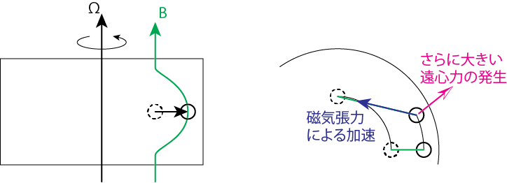
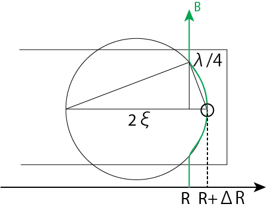

磁気回転不安定性
ブラックホールの周りを回っている降着円盤などは磁場を持ちます。その磁場によって円盤の中に乱流が起こるとされています。それを磁気回転不安定性(Magneto-Rotational Instability, MRI)と呼びます。降着円盤だけでなく、磁場を持っている円盤、例えば銀河円盤や原始惑星系円盤内部でも起こる重要な不安定性です。
基礎方程式の線形化
連続の式より
∂ρ∂t+∇⋅(ρv)=0(1)
運動方程式より
{∂∂t+(v⋅∇)}v+1ρ∇(P+18πB2)−14πρ(B⋅∇)B+∇Φ=0(2)
誘導方程式より
∂B∂t−∇×(v×B)=0(3)
マクスウェル方程式より
∇⋅B=0(4)
これらの式を線形化します。
v=v0+δv, ρ=ρ0+δρ, P=P0+δP, B=B0+δB
0の添字が付いている量は非摂動量で、上の基礎方程式群を満たします。
(1) ⟹ ∂δρ∂t+ρ0∇⋅δv=0(#1)
(2) ⟹ ∂δv∂t+(δv⋅∇)v0+(v0⋅∇)δv+1ρ0(δP+14πB0⋅δB)−δρρ20∇(P0+18πB20)−14πρ0((B0⋅∇)δB+(δB⋅∇)B0)+δρ4πρ20(B0⋅∇)B0=0(#2)
(4) ⟹ ∇⋅δB=0(#3)
(3) ⟹∂δB∂t−∇×(δv×B0+v0×δB)=∂δB∂t−((B0⋅∇)δv+δv(∇⋅B0)−B0(∇⋅δv)−(δv⋅∇)B0+(δB⋅∇)v0+v0(∇⋅δB)−δB(∇⋅v0)−(v0⋅∇)δB)
(4), (#3)式より
∂δB∂t−((B0⋅∇)δv−B0(∇⋅δv)−(δv⋅∇)B0+(δB⋅∇)v0−δB(∇⋅v0)−(v0⋅∇)δB)=0(#4)
問題設定
ここまでは一般論です。これ以降は、磁気回転不安定性を議論するための具体的な背景を考えていくことにしましょう。
円柱座標(R,φ,z)のもとでz軸周りを角速度Ω(R)で回転している系を考えます。すなわちv0=v0φeφ=RΩ(R)eφ。平衡状態では重力と遠心力が釣り合っているとします。一様な背景磁場はB0=(0,B0φ,B0z)とします。摂動量はδ∝e−iωt+ikzとして、波数はk=(0,0,k)のように書けるものとします。系は軸対称であり、式変形には局所解析近似(Local analysis)よりkR≃R/λ≫1、すなわち0の添字のついている非摂動量の微分は無視します。
ベクトル解析
具体的な成分計算をする前に、円柱座標系における以下のベクトル演算を確認しておきましょう。
∇⋅A=1R∂∂R(RAR)+1R∂Aφ∂φ+∂Az∂z
(A⋅∇)C=((A⋅grad)Cr−AφCφR)eR+((A⋅grad)Cφ+AφCRR)eφ+((A⋅grad)Cz)ez
ここで
A⋅grad=AR∂∂R+AφR∂∂φ+Az∂∂z
です。
計算
∂δρ∂t+ρ0∂δvz∂z=−iωδρ+ikρ0δvz=0 ⟹ −ωδρρ0+kδvz=0(*0)
(δv⋅∇)v0=−δvφv0φReR+δvR∂v0φ∂Reφ=−ΩδvφeR+δvR∂∂R(RΩ)eφ
(v0⋅∇)δv=−v0φδvφReR+v0φδvRReφ=−ΩδvφeR+ΩδvReφ
(B0⋅∇)δB=(B0z∂δBR∂z−B0φδBφR)eR+(B0z+∂δBφ∂z+B0φδBRR)eφ+B0z∂δBz∂zez=(ikB0zδBR−B0φδBφR)eR+(ikB0zδBφ+B0φδBRR)eφ+ikB0zδBzez≃kR≫1ikB0zδBReR+ikB0zδBφeφ+ikB0zδBzez
(δB⋅∇)B0=−δBφB0φReR+(δBR∂B0φ∂R+δBz∂B0φ∂z)eφ+(δBR∂B0z∂R+δBz∂B0z∂z)ez≃Localanalysis−δBφB0φReR
(B0⋅∇)B0=−B20φReR+B0z∂B0φ∂zeφ+B0z∂B0z∂zez≃Localanalysis−B20φReR
(B0⋅∇)δv=(B0z∂δvR∂z−B0φδvφR)eR+(B0z∂δvφ∂z+B0φδvRR)eφ+B0z∂δvz∂zez=(ikB0zδvR−B0φδvφR)eR+(ikB0zδvφ+B0φδvRR)eφ+ikB0zδvzez≃kR≫1ikB0zδvReR+ikB0zδvφeφ+ikB0zδvzez
B0(∇⋅δv)=B0(1R∂∂R(RδvR)+∂δvz∂z)=(δvRR+ikδvz)B0≃kR≫1ikδvzB0
(δv⋅∇)B0=−δvφB0φReR+(δvR∂B0φ∂R+δvz∂B0φ∂z)eφ+(δvR∂B0z∂R+δvz∂B0z∂z)ez≃Localanalysis−δvφB0φReR
(δB⋅∇)v0=−δBφv0φReR+δBR∂v0φ∂Reφ=−ΩδBφeR+δBR∂∂R(RΩ)eφ
δB(∇⋅v0)=0
(v0⋅∇)δB=−v0φδBφReR+v0φδBRReφ=−ΩδBφeR+ΩδBReφ
(#2)式のR成分より
−iωδvR−2Ωδvφ−δρρ20∂P0∂R−δρ8πρ20∂∂R(B20φ+B20z)−14πρ0(ikB0zδBR−δBφB0φR)−δρ4πρ20B20φR≃Localanalysis−iωδvR−2Ωδvφ−δρρ0((1ρ0∂P0∂R+18πρ0∂∂R(B20φ+B20z))+14πρ0B20φR)非摂動状態のR方向の運動方程式−14πρ0ikB0zδBR≃δρ/ρ0≪1−iωδvR−2Ωδvφ−ik4πρ0B0zδBR=0(*1)
(#2)式のφ成分より
−iωδvφ+δvR∂∂R(RΩ)+ΩδvR−14πρ0ikB0zδBφ=−iωδvφ+δvR(R∂Ω∂R+2Ω)−ik4πρ0B0zδBφ=−iωδvφ+δvRR(R2∂Ω∂R+2RΩ)−ik4πρ0B0zδBφ=−iωδvφ+δvRκ22Ω−ik4πρ0B0zδBφ=0(*2)
ここで
κ2≡2ΩR∂∂R(R2Ω)
はエピサイクリック振動数です。
(#2)式のz成分より
−iωδvz+1ρ0(ikδP+14πikB0φδBφ+14πikB0zδBz)−δρρ20∂P0∂z−δρ8πρ20∂∂z(B20φ+B20z)−ik4πρ0B0zδBz=−iωδvz+1ρ0(ikδP+14πikB0φδBφ)−δρρ0(1ρ0∂P0∂z+18πρ0∂∂z(B20φ+B20z))非摂動状態のz方向の運動方程式≃δρ/ρ0≪1−iωδvz+ikρ0δP+ik4πρ0B0φδBφ=0(*3)
(#4)式のR成分より
−iωδBR−(ikB0zδvR+δvφB0φR−ΩδBφ+ΩδBφ)=kR≫1−iωδBR−ikB0zδvR=0(*4)
(#4)式のφ成分より
−iωδBφ−(ikB0zδvφ−ikδvzB0φ+δBR∂∂R(RΩ)−ΩδBR)=−iωδBφ−ik(B0zδvφ−δvzB0φ)−δBRdΩdlnR=0(*5)
(#4)式のz成分より
−iωδBz=0(*6)
さらに状態方程式は、系が断熱的な運動をしていると仮定して
P0ργ0=(P0+δP)(ρ0+δρ)γ≃(P0+δP)1ργ0(1−γδρρ0)=P0ργ0−γP0ργ0δρρ0+δPργ0 ⟹ δP=γP0ρ0δρ=C2sδρ(*7)
とします。では具体的な分散関係式を導出しましょう。
回転のないただのプラズマのとき
(∗1),(∗4)式より
−iωδvR−ik4πρ0B0z(−kB0zδvRω)=0 ⟹ (ω2−k2v2Az)δvR=0
となります。よってR方向には横波のアルヴェーン波が伝播することがわかります。続いてφ,z方向(磁場に沿った方向)の分散関係式を求めましょう。
(∗2) ⟹ δvφ=−1ωkB0z4πρ0δBφ
(∗0),(∗3),(∗7)⟹ −ωδvz+kρ0γP0ρ0δρ+B0φk4πρ0δBφ=−ωδvz+kρ0γP0kωδvz+B0φk4πρ0δBφ=0⟹ (−ω+k2C2sω)δvz+B0φk4πρ0δBφ=0
(∗5)⟹ −iωδBφ=ikB0z(−1ωkB0z4πρ0)δBφ−ikB0φδvz=−k2B20z4πρ0ωδBφ−ikB0φδvz⟹ (ω−k2v2Azω)δBφ=kB0φδvz ⟹ δBφ=kB0φωω2−k2v2Azδvz
以上の式より
(−ω2+k2C2s)δvz+B20φk2ω24πρ0(ω2−k2v2Az)δvz=(−ω2+k2C2s+v2Aφk2ω2ω2−k2v2Az)δvz=0⟹ ω4−k2ω2(C2s+v2Az+v2Aφv2A)+k4v2AzC2s=0
よってφ,z方向から速い磁気音波と遅い磁気音波の分散関係式が得られます。
回転があるとき(簡単のためBφ=0)
r,φ方向の分散関係式を求めてみましょう。
(∗4) ⟹ δBR=−kB0zωδvR
(∗5) ⟹ −iωδBφ=−kB0zωδvRdΩdlnR+ikB0zδvφ ⟹ δBφ=kB0ziω2δvRdΩdlnR−kB0zωδvφ
(∗2)⟹ −iωδvφ+(2Ω+dΩdlnR)δvR−ikB0z4πρ0(kB0ziω2δvRdΩdlnR−kB0zωδvφ)=0⟹ (2Ω+ω2−k2v2Azω2dΩdlnR)δvR+iω2−k2v2Azωδvφ=0
(∗1) ⟹ −iωδvR−2Ωδvφ+ik4πρ0B0zδvR=ik2v2Az−ω2ωδvR−2Ωδvφ=0
以上より
⎛⎜
⎜⎝ik2v2Az−ω2ω−2Ω2Ω+ω2−k2v2Azω2dΩdlnRik2v2Az−ω2ω⎞⎟
⎟⎠(δvRδvφ)=0(##0)
任意のδv=(δvR,δvφ)でこの式が成り立つためには、係数行列の行列式が0であれば良いことがわかります。
det∣∣
∣
∣∣ik2v2Az−ω2ω−2Ω2Ω+ω2−k2v2Azω2dΩdlnRik2v2Az−ω2ω∣∣
∣
∣∣=−(k2v2Az−ω2)2ω2+4Ω2+ω2−k2v2Azω2dΩ2dlnR=0⟹ ω2−k2v2Az=±√4Ω2ω2+(ω2−k2v2Az)dΩ2dlnR(##1)
剛体回転のとき
dΩ/dR=0より
(##1) ⟹ ω2−k2v2Az=±√4Ω2ω2 ⟹ (ωΩ)2=(kvAzΩ)2±√4(ωΩ)2
分散関係式は求まりましたが、ここでさらに(##0)式から
iδvφδvR=−2Ωk2v2Az−ω2ω=±1
よりδvφ=∓iδvRとしてみましょう。すると
δv=δvReR+δvφeφ=δvR(eR∓ieφ)
となります。速い位相速度を持つ波は、円盤と同じ回転方向に回る円偏波、遅い位相速度を持つ波は円盤の回転方向とは逆方向に回る円偏波と考えることができます。
剛体回転の場合、どちらもω2は負になることがなく、不安定でないことがわかります。
ケプラー回転のとき
Ω2=GMR3 ⟹ dΩ2dR=−3GMR4=−3Ω21R ⟹ dΩ2dlnR=−3Ω2
より
(##1) ⟹ ω2−k2v2Az=±√Ω2ω2+3Ω2k2v2Az
0<k<√3Ω/vAzではω2<0となり、これは不安定となります。最大成長率はおよそνMRI≃0.75Ωとなります。
Figure: ケプラー回転のとき、縦軸\omega2/\Omega2, 横軸kvA/\Omega
銀河円盤(flat rotation)のとき
Ω2=v20R2 ⟹ dΩ2dR=−2Ω2R ⟹ dΩ2dlnR=−2Ω2
より
(##1) ⟹ ω2−k2v2Az=±√2Ω2ω2+2Ω2k2v2Az
0<k<√2Ω/vAzではω2<0となり、これは不安定です。最大成長率はおよそνMRI≃0.5Ωです。
物理的解釈
先ほどの円偏波の話に少し戻り、MRIの物理過程について解説します。今は基底ベクトルにeR,eφを用いているので、これは円盤とともに回転している系からみたときの話になります。円盤の外にいる、回転していない系からこれを観察してみると、速い位相速度の円偏波は回転円盤よりも大きな角速度で回転するモードになります。遅い位相速度の円偏波は回転円盤よりも小さな角速度で回転するモードに対応しています。安定点から摂動を加えられた時に、大きな角速度で回転しているモードでは、遠心力が大きいので、流体要素は遠心力を復元力とした早い周期のエピサイクリック運動を行うことができます。磁気張力による角運動量輸送のタイムスケールよりもエピサイクリック振動周期が短いので、磁力線は棚引かず、不安定になりません。一方で、小さな角速度で回転しているモードは遠心力が弱いので流体要素のエピサイクリック振動周期が長くなります。エピサイクリック運動で元の位置に戻るよりも先に、磁気張力による角運動量輸送が行われてしまい、不安定となります。
直感的導出
ここまで厳密な数値解析から、安定なモードと不安定なモードの2種類が存在することがわかりましたが、ここでは定性的にこの不安定性を導出することを模索しましょう。
Figure: 磁場を伴って回転するプラズマ円盤中の流体要素に摂動を加えた図
ある重力場中で安定に差動回転をしているプラズマ円盤があるとします。そこに回転軸方向に磁場が加わっていたとしましょう。磁力線が突き刺さった半径Rの円運動している流体要素に摂動を加えます。ここで加えた摂動は動径方向に小さく加えたものであり、角運動量は保存しているものとします。角運動量を保存したまま外側のR+ΔRに移動したため、その分だけ角速度は遅くなります。よって磁力線はより大きく変形し磁気張力が加わります。すると磁気張力により回転方向の角速度が働くため、流体要素の角速度を大きくします。しかし、それではR+ΔRの位置での重力よりも遠心力が大きくなるので、より外側に追いやられてしまいます。その分磁力線がさらに伸ばされ、より大きな磁気張力が働きます。このように、磁力線が存在することによって角運動量の輸送が起こる一連の過程がMRIの本質です。
この考え方から、MRIの起こる条件を見積もってみましょう。以下ではケプラー回転を仮定します。動径方向の釣り合いの式より
(重力)=GMR2 → GM(R+ΔR)2=GMR21(1+ΔRR)2≃GMR2(1−2ΔRR)
(遠心力)=RΩ(R)2 → (R+ΔR)Ω(R)2
遠心力部分に「回転方向に働く磁気張力による角速度を一定にしようとする効果」が入っています。ケプラー回転よりΩ(R)=√GM/R3です。
∴ −(重力)+(遠心力)=2GMR3ΔR+ΔΩ(R)2=3ΔRΩ(R)2
動径方向に働く磁気張力を考えましょう。以下の図のように変形した磁力線の曲率半径をξとすると
Figure: 磁場の変形と曲率半径
(磁気張力)=14πρB2ξ=v2Aξ
図のように三角形の相似を用いると
2ξ:λ4=λ4:ΔR ⟹ ξ=λ232ΔR=π28ΔR1k2
よって磁気張力の大きさは
8π2ΔRk2v2A≃ΔRk2v2A
(重力と遠心力の合力) > 動径方向に働く磁気張力のとき、不安定となるので
3Ω2ΔR>ΔRk2v2A ⟹ 0<k<√3ΩvA
で不安定となります。これは厳密に式変形をした場合の不安定条件と一致します。
参考文献
- Balbus & Hawley, 1991
- 活動する宇宙, 柴田, 福江, 松元, 嶺重